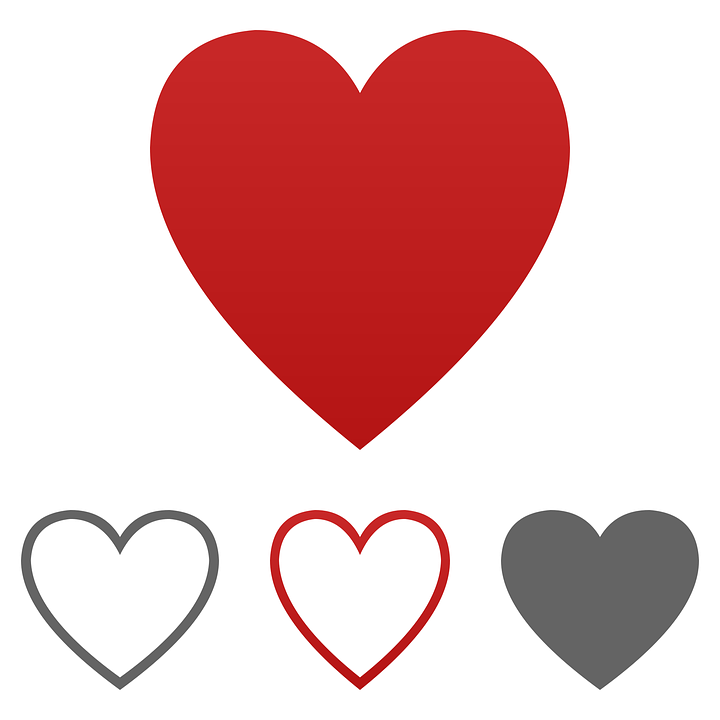

We try to найти свою аудиторию
Популярные тиктокеры набрают свою аудиторию разными способами. Самый известный и в то же время действенный способ это попадание в Рекомендации. Если ваш ролик находится в этом разделе, то вас видит очень много людей сразу, а потому это и есть лучший способ обратить на себя внимание. Для начинающих тиктокеров, в частности и нашего профиля, в начале деятельности достаточно важно снимать интересный для пользователей контент. Практика показывает, что на этом этапе Tik Tok может, грубо говоря, "отсеять" вас в "плохую" группу. Как правило, потом люди попавшие когда-либо в неё врядли попадут в Рекомендации, потому что на своём "рассвете" ничего не снимали или выкладывали неинтересные видео. Также ходят слухи по поводу так называемого Теневого Бана. Такое явление проявляется, когда вы понимаете, что ваши подписчики не видят ваши ролики в своей ленте Подписок. Условно говорят, что вы попали в теневой бан. Смотреть откуда к вам "пришли" просмотры можно с помощью аналитики. Таким образом, можно понять попадаете ли вы в Рекомендации вообще.


Мы же в свою очередь сейчас очень заботимся о проходе наших роликов в Рекомендации. Для этого мы используем ряд способов. Во-первых, самое важное это интересный контент, который, по вашему мнению, может понравиться широким кругам пользователей. Во-вторых, важной частью создания видео является его описание. В нём можно отмечать других пользователей и ставить различные хештеги. Часто люди могут найти ваш видеоролик по какому-либо хештегу. В-третьих, мы стараемся использовать особенные звуки. Лучшим вариантом будет звук, который уже встречался в Рекомендациях, но под этот звук нет более 100 клипов. В таком случае, по этому звуку на вас также может выйти хорошая часть аудитории.
В то же время, мы стараемся поддерживать свой Instagram-профиль. В нём мы также публикуем наши вышедшие в Тик Токе ролики и используем большое количество хештегов в описаниях. Охват аудитории в нашем Instagramе колеблется в районе 100. Как показала практика, там наоборот лучше заходят ролики несущие немного больший смысл, чем мемы.